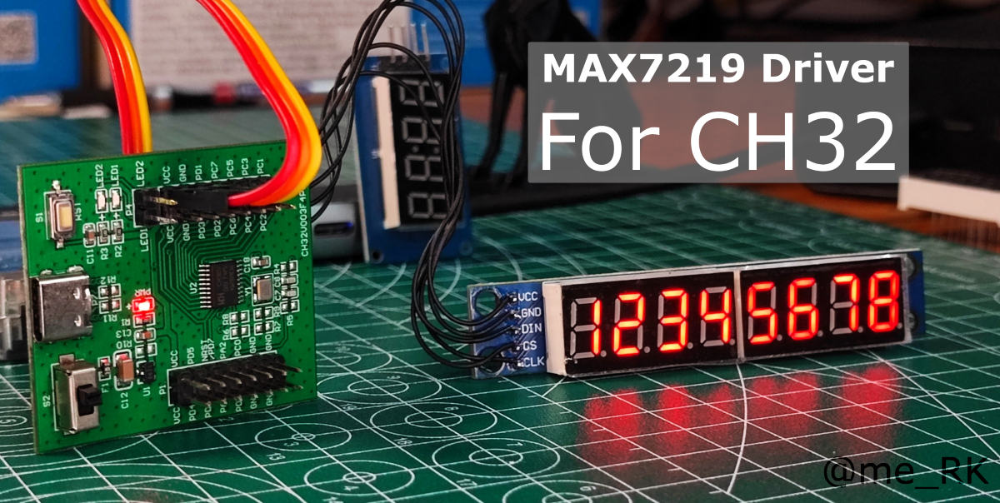
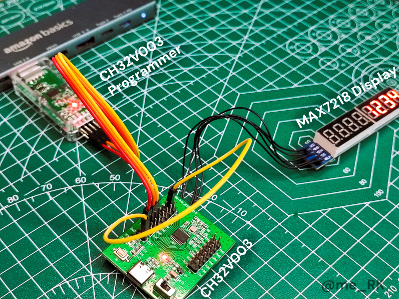

[
[ ](LICENSE)
](LICENSE) 



A lightweight Arduino library for controlling MAX7219 LED driver ICs with 7-segment displays. Optimized for memory-constrained microcontrollers like CH32V003 and other Arduino-compatible boards.
🎯 Primary Purpose
The main objective of this library is to provide a simple, efficient, and memory-optimized interface for controlling MAX7219 7-segment displays on resource-constrained microcontrollers.
This library is specifically designed for developers working with limited flash and RAM, such as the CH32V003 microcontroller, while maintaining compatibility with standard Arduino boards. It offers a clean API that handles both hardware (BCD decode) and software (no-decode) display modes, making it easy to display numbers, text, time, and custom patterns.
Key Benefits
- Memory Efficient: Optimized for microcontrollers with limited flash and RAM
- Easy to Use: Simple, intuitive API for common display tasks
- Flexible: Supports both hardware and software display modes
- Feature Rich: Includes animations, alignment options, and special formats
- Well Documented: Comprehensive Doxygen documentation
- Production Ready: Follows Arduino library best practices
Features
- 🎯 Dual Display Modes: BCD decode mode (hardware) and no-decode mode (software)
- 📐 Flexible Alignment: Left, right, and center alignment options
- 🔢 Multiple Formats: Numbers (int, long, float), text, time (HH:MM, HH:MM:SS), hex, binary
- 🎬 Animations: Blink, fade, scroll, chase, and count animations
- 🎛️ Brightness Control: 16-level brightness control (0-15)
- ⚡ Power Management: Turn display on/off programmatically
- 🔧 Low-Level Control: Direct segment and raw digit manipulation
- 📖 Well Documented: Comprehensive API documentation with examples
- 💾 Memory Optimized: Designed for memory-constrained microcontrollers
- 🎯 Production Ready: Tested and optimized for CH32V003
Platform Compatibility
The MAX7219_CH32 library is compatible with the following platforms:
- ✅ CH32V003: Tested and optimized (primary target platform)
- ✅ Arduino Uno/Nano: Full support with standard Arduino pins
- ✅ Arduino Mega: Full support with standard Arduino pins
- ✅ ESP32: Compatible (may require pin adjustments)
- ✅ ESP8266: Compatible (may require pin adjustments)
- ✅ Other Arduino-compatible boards: Should work with proper pin configuration
Installation
Arduino Library Manager (Recommended)
- Open Arduino IDE
- Go to Tools → Manage Libraries
- Search for "MAX7219_CH32"
- Click Install
Manual Installation
- Download or clone this repository
- Copy the MAX7219_CH32 folder to your Arduino libraries directory:
- Windows: Documents\Arduino\libraries\
- macOS: ~/Documents/Arduino/libraries/
- Linux: ~/Arduino/libraries/
- Restart Arduino IDE
Hardware Requirements

- MAX7219 LED driver IC
- 7-segment display module (common cathode)
- Arduino-compatible microcontroller
- 3 digital pins for SPI communication (DIN, CLK, CS)
- 5V power supply
Wiring
Pin Connections
| MAX7219 Pin | Arduino Pin | Description |
|---|---|---|
| DIN | Digital pin | Data input (MOSI) |
| CLK | Digital pin | Clock (SCK) |
| CS | Digital pin | Chip select (CS/SS) |
| VCC | 5V | Power supply |
| GND | GND | Ground |
Example Wiring (CH32V003)
Example Wiring (Standard Arduino)
Quick Start
1. Basic Setup
2. Display Modes
3. Alignment Options
4. Time Display
5. Animations
API Reference
Constructor
Creates a MAX7219 display instance.
Parameters:
- dinPin: Data input pin (MOSI)
- clkPin: Clock pin (SCK)
- csPin: Chip select pin (CS/SS)
- numDigits: Number of digits (1-8, default: 8)
Example:
Initialization Methods
begin()
Initialize the display with default mode (BCD decode).
begin(uint8_t mode)
Initialize the display with specific mode.
Configuration Methods
setMode(uint8_t mode)
Set the display decode mode.
getMode()
Get the current display mode.
setAlignment(uint8_t alignment)
Set text/number alignment.
getAlignment()
Get the current alignment setting.
setBrightness(uint8_t level)
Set display brightness (0-15, where 0 is dimmest and 15 is brightest).
setPower(bool on)
Turn display on or off.
clear()
Clear all digits on the display.
Display Methods
display(const char* text)
Display a text string.
display(int number)
Display an integer.
display(long number)
Display a long number.
display(double number, uint8_t decimals = 2)
Display a floating point number.
displayAt(uint8_t position, uint8_t value, bool dp = false)
Display a value at a specific position.
displayAt(uint8_t position, char character, bool dp = false)
Display a character at a specific position.
Special Format Methods
displayTime(uint8_t hours, uint8_t minutes)
Display time in HH:MM format.
displayTime(uint8_t hours, uint8_t minutes, uint8_t seconds)
Display time in HH:MM:SS format.
displayHex(uint32_t value)
Display a value in hexadecimal format.
displayBinary(uint8_t value)
Display a value in binary format (requires 8 digits).
Animation Methods
blink(uint8_t times = 3, uint16_t delayMs = 500)
Blink the display.
fadeIn(uint16_t delayMs = 50)
Fade in animation (brightness 0 to current).
fadeOut(uint16_t delayMs = 50)
Fade out animation (current to 0).
scroll(const char* text, uint16_t delayMs = 200)
Scroll text across the display.
scroll(long number, uint16_t delayMs = 200)
Scroll a number across the display.
chase(uint16_t delayMs = 100)
Chase animation (digit-by-digit).
countUp(long from, long to, uint16_t delayMs = 100)
Count up animation.
countDown(long from, long to, uint16_t delayMs = 100)
Count down animation.
Low-Level Control Methods
setSegments(uint8_t position, uint8_t segments)
Set raw segment pattern at a specific position.
setRawDigit(uint8_t position, uint8_t value, bool dp = false)
Set raw digit value at a specific position.
Constants
Display Modes
- MAX7219_MODE_DECODE - BCD decode mode (hardware handles 0-9 display)
- MAX7219_MODE_NO_DECODE - No decode mode (software handles display)
Alignment Options
- MAX7219_ALIGN_LEFT - Left-aligned (position 0 = leftmost)
- MAX7219_ALIGN_RIGHT - Right-aligned (position 0 = rightmost, default)
- MAX7219_ALIGN_CENTER - Center-aligned (proportional to content size)
Examples
The library includes several example sketches:
Getting Started Examples
- BasicExample: Simple demonstration showing basic number and text display
- AdvancedExample: Comprehensive demonstration of all library features including alignment, modes, animations, and special formats
BasicExample Walkthrough
The BasicExample is perfect for beginners and demonstrates the most common usage:
- Display Numbers: Shows how to display integers
- Display Text: Shows how to display text strings
- Mode Switching: Demonstrates switching between decode and no-decode modes
- Clear Display: Shows how to clear the display
This example is ideal for:
- Learning the basics of the library
- Testing your hardware setup
- Understanding the fundamental display functions
- Quick start guide for new users
AdvancedExample Walkthrough

Watch the demo video above to see all features in action!
The AdvancedExample demonstrates all major features of the MAX7219_CH32 library:
- Alignment: Shows left, right, and center alignment options
- Display Modes: Demonstrates BCD decode and no-decode modes
- Number Display: Shows integer, negative, and floating point numbers
- Text Display: Demonstrates character and string display
- Position Display: Shows how to display at specific positions
- Time Display: Demonstrates HH:MM and HH:MM:SS formats
- Hex & Binary: Shows hexadecimal and binary display
- Brightness Control: Demonstrates brightness adjustment
- Power Control: Shows display on/off functionality
- Animations: Demonstrates blink, scroll, chase, and count animations
- Low-Level Control: Shows direct segment and digit manipulation
This example is ideal for:
- Learning all library features
- Testing your hardware setup
- Understanding different display modes
- Verifying library installation
- Seeing practical usage examples
Memory Usage
This library is optimized for memory-constrained microcontrollers:
- Flash: ~6-8 KB (varies by compiler and optimization settings)
- RAM: ~200-300 bytes (depends on display configuration and number of digits)
Memory Optimization Tips
- Use BCD decode mode when displaying only numbers (more efficient)
- Use no-decode mode only when displaying text or custom patterns
- Avoid using floating point if not necessary
- Use appropriate number of digits for your display
Troubleshooting
Display shows nothing
- Check wiring connections: Verify DIN, CLK, and CS pins are correctly connected
- Verify power supply: Ensure 5V is properly connected and stable
- Check CS pin: Ensure chip select pin is correctly connected
- Increase brightness: Try display.setBrightness(15) to ensure it's not too dim
- Verify initialization: Ensure begin() is called in setup()
Display shows incorrect characters
- Check mode: Verify you're using the correct mode (DECODE vs NO_DECODE)
- Verify alignment: Check alignment settings match your expectations
- Check digit count: Ensure number of digits matches your display configuration
- Verify data: Check that the data you're sending is valid
Display flickers or is unstable
- Check power supply: Ensure stable 5V power supply with adequate current
- Verify SPI timing: Library uses software SPI - ensure no interference
- Reduce brightness: Try reducing brightness to display.setBrightness(8)
- Check connections: Ensure all connections are solid and properly soldered
Display shows garbled characters
- Check mode switching: Ensure you set the correct mode before displaying
- Verify text format: In no-decode mode, only A-Z, 0-9, and some special chars are supported
- Check alignment: Incorrect alignment can make text appear garbled
Future Enhancements
The library is designed to be extensible. Future versions may include:
- Multiple Display Support: Cascade multiple MAX7219 chips
- Custom Characters: User-defined character patterns
- Display Modes: Additional display modes and effects
- Performance: Further memory and speed optimizations
- SPI Hardware Support: Optional hardware SPI for faster communication
- Interrupt Support: Non-blocking animations
Contributing
Contributions are welcome! Please feel free to submit pull requests or open issues for bugs and feature requests.
License
This library is licensed under the MIT License. See the [LICENSE](LICENSE) file for details.
Author
Rithik Krisna M (@me-RK)
Version History
- v1.0.0 (2025): 🎉 Initial release✅ Basic display functionality with BCD decode and no-decode modes📐 Alignment options (left, right, center)🎬 Animation support (blink, fade, scroll, chase, count)🔢 Multiple display formats (numbers, text, time, hex, binary)💾 Memory optimized for CH32V003 and other constrained microcontrollers📖 Comprehensive Doxygen documentation🎯 Production ready with Arduino library best practices
Documentation
API documentation can be generated using Doxygen. See DOCUMENTATION.md for instructions on generating the documentation.
To generate the documentation:
The documentation will be available in the docs/html/ directory.
Online documentation is available at: https://me-rk.github.io/MAX7219_CH32/
Support
If you encounter any issues or have questions:
- Check the examples folder
- Review the documentation
- Open an issue
- Check the Arduino Forum
Note: This library is designed for educational and development purposes. For production applications, ensure proper testing and validation for your specific use case.